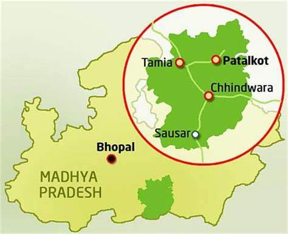

Introduction
Chhindwara: The Corn City Chhindwara derives its name from the local wild palm called
“Chhind.” This vibrant city has a fascinating legacy associated with corn. Did you know that Madhya Pradesh
is one of the largest corn-producing states in India? And Chhindwara plays a significant role in this
agricultural feat.
Around a decade ago, the visionary leader Mr. Kamal Nath, who is now the Ex Chief Minister, introduced the
idea of cultivating corn in the fertile soil of Chhindwara. The local farmers embraced maize farming
wholeheartedly, and their efforts have borne fruit. Today, Chhindwara stands as a testament to successful
corn cultivation, thanks to its suitable soil and favorable climate.
About Chhindwara
Chhindwara is a city in Madhya Pradesh, India, and serves as the administrative headquarters of Chhindwara
District. Here are some key points about this vibrant city:
- Geography: Chhindwara lies on an upland plateau in the Satpura Range, surrounded by lush green fields,
rivers, and dense forests teeming with diverse flora and fauna.
- Name Origin: The city’s name comes from “chhind,” which means date palms in Hindi.
- Transportation: Chhindwara is accessible by rail and road from nearby cities like Betul, Jabalpur, and
Nagpur. The nearest airport is in Nagpur (about 130 km away).
- History: Legends suggest that the district was once full of “Chhind” trees (wild date palms) or was
considered equivalent to entering a lion’s den due to its lion population. Over time, it became known as
“Chhindwara.”
- Economy: The city is engaged in cotton trade and coal shipping.
- Climate: Chhindwara experiences a pleasant climate, with average high temperatures around 32.7°C
(90.9°F) and lows around 18.0°C (64.4°F).
Economy
Chhindwara is home to brands like Raymond's & Hindustan Unilever. The city has rich market areas such as Mansarover Complex, Fawwara Chowk, Nagpur Road, Gole Gunj & Gandhi Gunj. Looking the spending capability of the local population all major automobile brands have made their presence in the city. Apart from this Parasia area is known for its coal fields and majority of population in this region is associated with Western Coalfields Limited for their employment.
For more information, visit Chhindwara on Wikipedia.